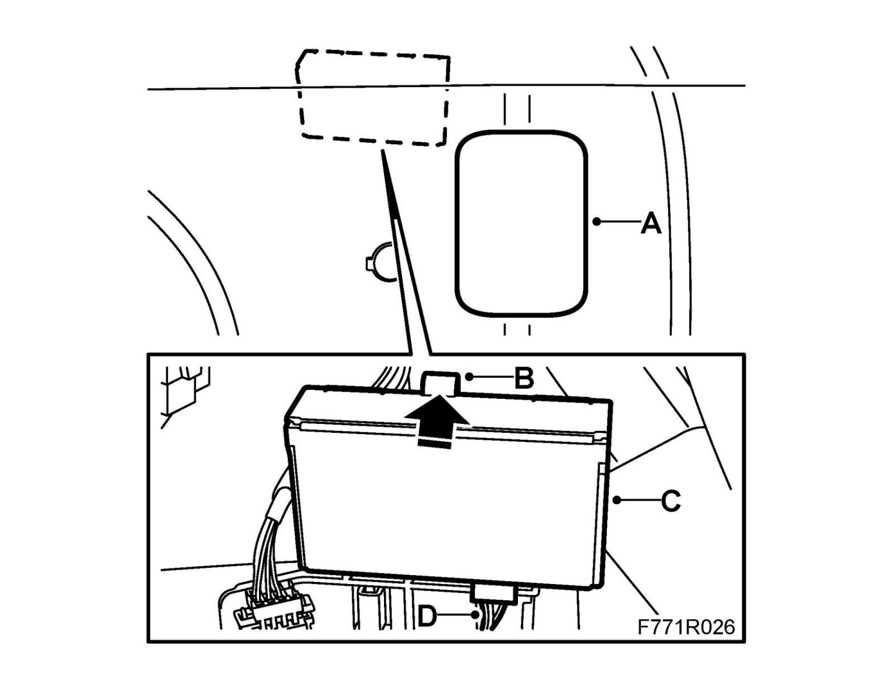

Control Module, Tire Pressure (753), 5D
Control module, tire pressure (753), 5DTo remove
1. Carry out Procedure before control module removal.
2. Remove the cover (A) on the right-hand side luggage compartment trim.

3. Press in the catch (B) and pull the control module (C) up until it is loose.
4. Unplug the connector (D).
To fit
1. Plug in the connector (D).
2. Fit the control module (C) in the groove until the catch (B) engages.
3. Fit the cover (A).
4. Carry out Procedure after control module replacement.